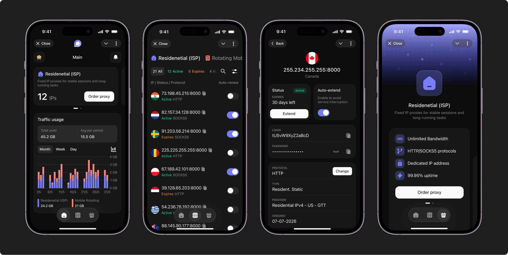
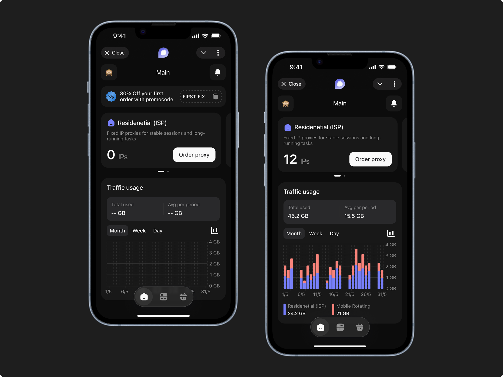
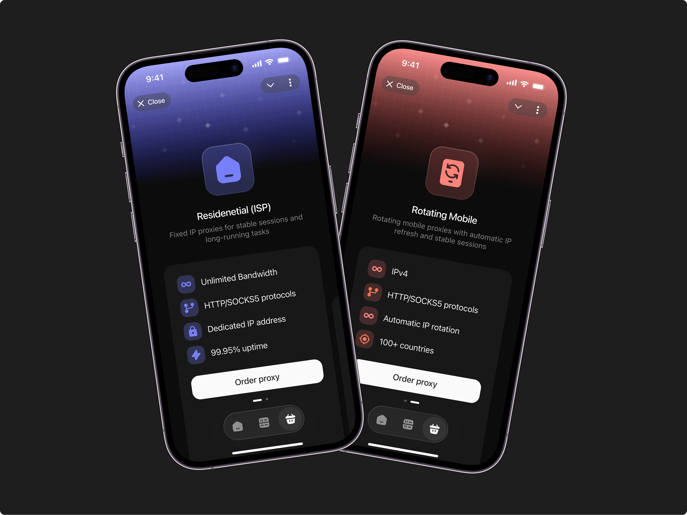
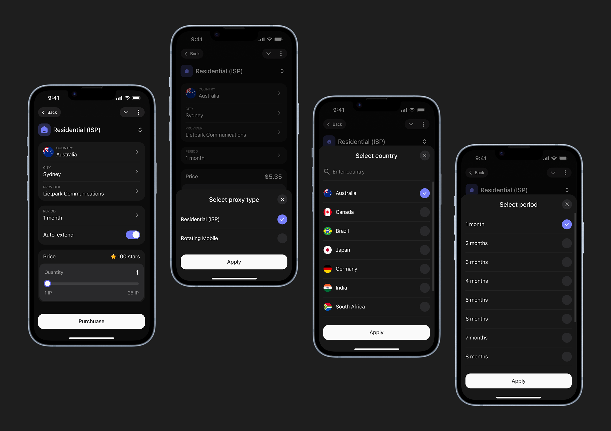
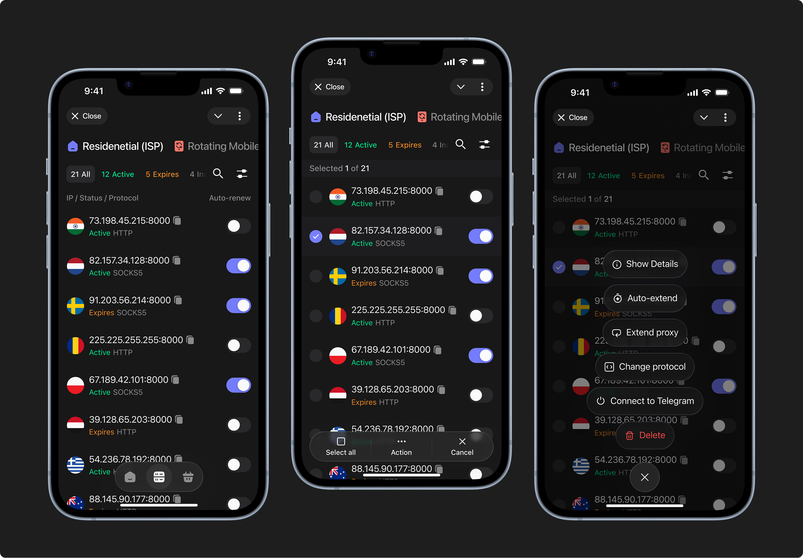
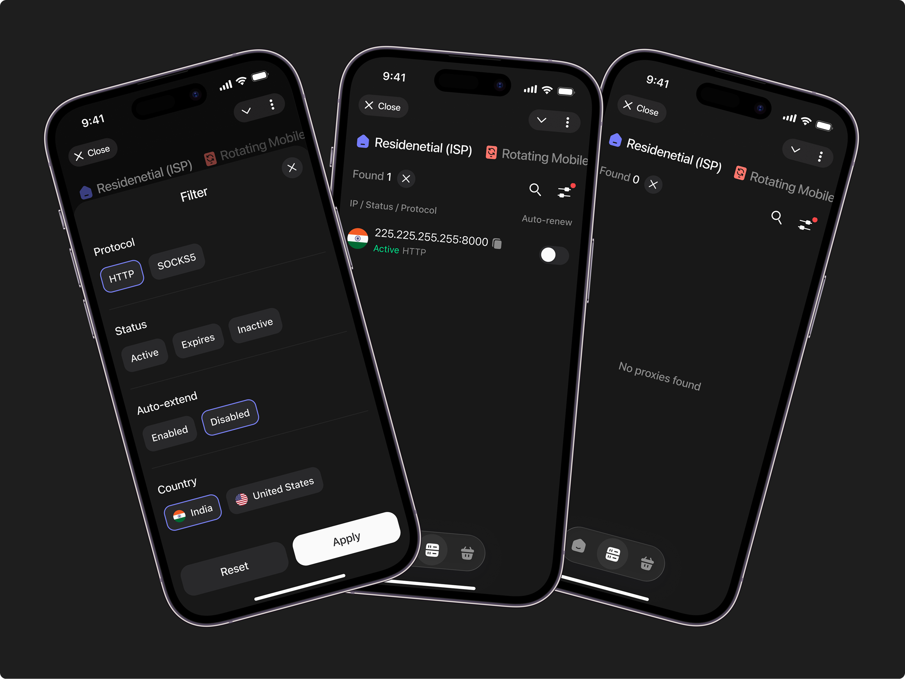
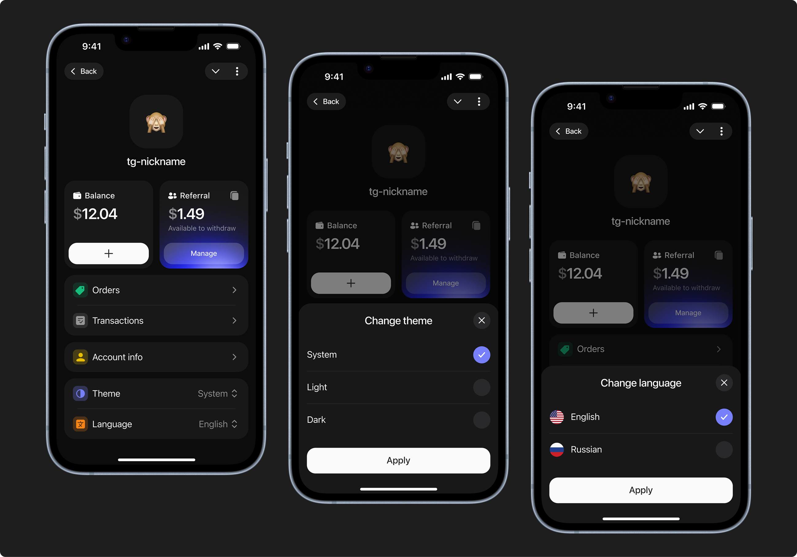

Telegram Mini App для покупки прокси
ProxyJam Mini App — мобильное Telegram-приложение для покупки прокси и управления ими. Продолжение существующего веб-сервиса ProxyJam, адаптированное под Telegram с учётом ограничений платформы.
 Открыть в Figma
Открыть в Figma

01.
О проекте
Разработала дизайн мобильного Telegram Mini App для ProxyJam — сервиса для покупки прокси. Спроектировала сценарии выбора типа прокси, оформления заказа с оплатой через звёзды Telegram, управления списком прокси с фильтрацией и поиском, а также экраны профиля с историей заказов. Создала UI-кит и переработала визуальный стиль с нуля, заложив поддержку светлой и тёмной тем.
02.
Задача

Перенести ключевые сценарии веб-версии ProxyJam в мобильное Telegram Mini App.
Адаптировать интерфейс под специфику мобильного экрана и навигации Telegram.
Поддержать оплату через нативный способ для Telegram — звёзды.
Настроить светлую и тёмную темы через переменные.
03.
Мои обязанности
Проектирование структуры приложения и пользовательских сценариев.
Разработка нового UI-кита.
Взаимодействие с разработчиками по технической реализации.
Подготовка макетов в двух темах (Light / Dark).
Презентация решений команде.
04.
Ограничения и сложности
Невозможность напрямую перенести мобильную версию. В приложении отличается навигация и логика оплаты, кроме того необходимо было добавить тёмную тему для пользователей, которые используют тёмную тему Telegram.
Согласованность с веб-версией. Несмотря на обновлённый визуал, логика сценариев и терминология должны были оставаться узнаваемыми для пользователей, которые уже знакомы с сервисом.
Неполная информация. Часть данных (список провайдеров, доступных стран) на момент работы ещё не была окончательно определена на бэкенде, поэтому часть полей проектировалась с расчётом на динамические данные.
05.
Дизайн
Главный экран
Новому пользователю показывается промо-баннер с промокодом на первый заказ. Активному — карточки с текущими прокси, счётчики использования трафика и график потребления по дням, неделям или месяцам.

Выбор типа прокси
При нажатии «Order proxy» или самой правой кнопки на таб-баре открывается экран выбора типа прокси. Каждый тип оформлен как отдельная карточка с иллюстрацией и описанием, свайп переключает между ними. Ниже находится список ключевых преимуществ и кнопка оформления заказа.

Форма заказа
Собрана на одном экране: тип прокси в шапке, параметры (страна, город, провайдер, период) через bottom sheets, переключатель автопродления, цена в звёздах и слайдер количества IP. Всё сделано в один шаг, без дополнительных страниц и редиректов.

Список прокси
Наверху экрана находятся вкладки с типами прокси и статусами. При долгом нажатии можно управлять списком прокси, менять протокол, автопродление, удалить, подключить к Telegram, посмотреть более детальную информацию о прокси.

Страница поиска (найдено по фильтру)
При применении фильтра интерфейс отображает количество найденных результатов с возможностью сбросить фильтр.

Профиль
Профиль отображает Telegram-никнейм пользователя и аватар, взятый из аккаунта. Настройки минимальные — история заказов, смена темы и языка. Переключение темы реализовано через bottom sheet.

Светлая и тёмная тема
Все экраны проработаны в двух темах. Для тёмной темы переработана вся цветовая схема: фоны, карточки, иконки, графики. Граф трафика в тёмной теме использует более насыщенные акцентные цвета на тёмном фоне, что делает данные более читаемыми.
06.
Результаты
01
90+ компонентов
Создан новый UI-кит с поддержкой токенов Light/Dark и нативными паттернами Telegram Mini App.
02
Две темы
Все экраны проработаны в светлой и тёмной теме, с переключением через системные настройки.
03
8+ сценариев
Выбор прокси → заказ → управление списком → история → профиль, включая служебные состояния.
В результате спроектировано мобильное приложение, которое сохраняет логику и терминологию веб-версии, при этом работает органично внутри Telegram: использует нативные паттерны мобильного интерфейса, поддерживает платёжную систему звёзд Telegram и полностью адаптировано под обе системные темы.